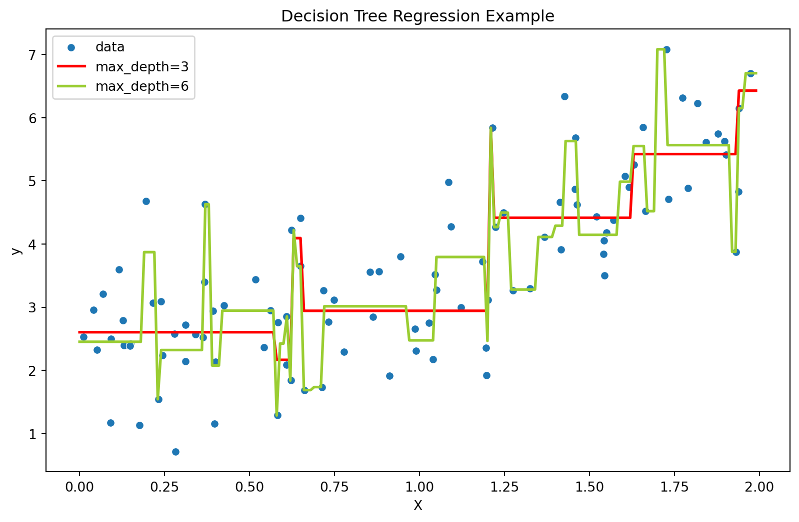

import numpy as np
import pandas as pd
import seaborn as sns
import matplotlib.pyplot as plt
# Set a random seed for reproducibility
np.random.seed(42)
# Generate synthetic data
X = np.linspace(0, 10, 100) # Independent variable
noise = np.random.normal(0, 2, 100) # Gaussian noise
y = 2 * X + 1 + noise # Linear relationship with noise
# Create a DataFrame
data = pd.DataFrame({'X': X, 'y': y})
plt.figure(figsize=(10, 6))
sns.regplot(x='X', y='y', data=data, line_kws={'color': 'red', 'label': 'Regression Line'})
plt.title('Single-Variable Linear Regression')
plt.xlabel('Independent Variable (X)')
plt.ylabel('Dependent Variable (y)')
plt.legend()
plt.show()Regression is a statistical method used for modeling the relationship between a dependent variable (target) and one or more independent variables (features). The primary goal of regression analysis is to understand how the independent variables contribute to the variability in the dependent variable. The dependent variable in a regression task is numerical and usually continuous, rather than catergorical in a classification task. Regression is usually categorized into linear regression and non-linear regression.
Linear Regression assumes a linear relationship between the dependent and independent variables, and models the relationship by fitting a linear equation to the observed data. The simplest linear equation takes the following form:
\(Y = mX + b\)
where:
- \(Y\) is the dependent variable.
- \(X\) is the independent variable.
- \(m\) is the slope of the line.
- \(b\) is the y-intercept.
The linear equation can be extended to include multiple independent variables as follows:
\(Y = b_0 + b_1X_1 + b_2X_2 + \ldots + b_nX_n\)
This is a multivariate linear regression assuming linear relationship in a higher dimension feature space.
We can make up a scatter plot with a fitting line to see what a typical linear regression looks like:
The real-word data are usually more complicated, and can not be described by a simple linear equation. The non-Linear regression extends regression analysis to model relationships that are not linear. The functional form of the relationship between variables is more complex and can take various shapes. It is suitable for data where the variance of errors is not constant across all levels of the independent variable.
Non-linear regression can involve various mathematical functions like exponential, logarithmic, polynomial, or even custom functions based on the nature of the data. This is called a parametric approach in which you use one or more mathematical models to fit the data.
Polynomial equation is a typical non-linear regression equation and takes the following form:
\(Y = \beta_0 + \beta_1 X + \beta_2 X^2 + \epsilon\)
where:
- \(Y\) is the dependent variable.
- \(X\) is the independent variable.
- \(\beta_0, \beta_1, \beta_2\) are parameters.
- \(\epsilon\) is the error term.
Let’s see what this may look like:
from sklearn.preprocessing import PolynomialFeatures
from sklearn.linear_model import LinearRegression
# Generate synthetic data
np.random.seed(42)
X = 2 * np.random.rand(100, 1)
y = 0.5 * X**2 + X + 2 + np.random.randn(100, 1)
# Fit polynomial features
poly_features = PolynomialFeatures(degree=2, include_bias=False)
X_poly = poly_features.fit_transform(X)
# Fit linear regression
lin_reg = LinearRegression()
lin_reg.fit(X_poly, y)
# Plot the data and the fitted curve
plt.figure(figsize=(10, 6))
sns.scatterplot(x=X.flatten(), y=y.flatten(), label='Data')
sns.lineplot(x=X.flatten(), y=lin_reg.predict(X_poly).flatten(), color='red', label='Polynomial Regression')
plt.title('Polynomial Regression Example')
plt.xlabel('Independent Variable (X)')
plt.ylabel('Dependent Variable (y)')
plt.legend()
plt.show()There is another way to do non-linear regression. For example, regression with decision tree does not assume a mathematical relationship. Instead, the alrogithm recursively splits the data into subsets based on the values of input features, creating a tree structure. Predictions are made by averaging the target values in the leaf nodes reached by a given input. This is called a non-parametric approach. It is well-suited for capturing complex, non-linear relationships as it can approximate arbitrary shapes.
Similar to decision tree classifier, a decision tree regressor can be prone to overfitting, creating branches tailored to the training data. Pruning techniques are often applied to prevent overfitting. In addition, ensemble methods like Random Forests (bagging) and Gradient Boosting Decision Tree (boosting) are commonly used to enhance performance and reduce overfitting.
Let’s see how a decision tree work on a regression task:
import matplotlib.pyplot as plt
import numpy as np
from sklearn.tree import DecisionTreeRegressor
# Generate synthetic data
np.random.seed(42)
X = 2 * np.random.rand(100, 1)
y = 0.5 * X**2 + X + 2 + np.random.randn(100, 1)
# Fit regression model
regr_1 = DecisionTreeRegressor(max_depth=3)
regr_2 = DecisionTreeRegressor(max_depth=6)
regr_1.fit(X, y)
regr_2.fit(X, y)
# Predict
X_test = np.arange(0.0, 2.0, 0.01)[:, np.newaxis]
y_1 = regr_1.predict(X_test)
y_2 = regr_2.predict(X_test)
# Plot the results using Seaborn for styling
plt.figure(figsize=(10, 6))
sns.scatterplot(x=X.flatten(), y=y.flatten(), label="data")
sns.lineplot(x=X_test.flatten(), y=y_1.flatten(), label="max_depth=3", color="red", linewidth=2)
sns.lineplot(x=X_test.flatten(), y=y_2.flatten(), label="max_depth=6", color="yellowgreen", linewidth=2)
plt.xlabel("X")
plt.ylabel("y")
plt.title("Decision Tree Regression Example")
plt.legend()
plt.show()
We can see that if the maximum depth of the tree (controlled by the max_depth parameter) is set too high, the decision trees learn too fine details of the training data and learn from the noise, i.e. they overfit.
The choice between Polynomial Regression and Decision Tree Regression depends on the specific characteristics of the dataset and the nature of the relationship being modeled. Polynomial regression is suitable when the underlying relationship is polynomial, while decision tree regression provides flexibility for capturing non-linear and complex patterns without specifying a particular function form. The decision often involves trade-offs between interpretability, computational efficiency, and the ability to handle different types of relationships.